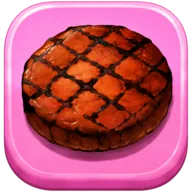

To'qqizta rejim
Stack Rush, Press Rush, Order Rush, Current Sort, Orbit Stack 3D, Stack 3D, Round 3D, Balance Tower 3D va Slice & Fit 3D, rejim tanlash menyusidan tanlanadi.

Burger StackWillowinWorlds oʻyin sahifasi WillowinWorlds sahifasiga qaytishTaxlash uchun bosing. Buyurtmani topshiring.
O'sib borayotgan burgerga ingredient qatlamlarini tashlang, ularni tekis saqlang va yig'ayotganingizda retseptlarga mos keltiring. To'qqizta rejim uyum qanday harakatlanishini va nimaga intilishingizni o'zgartiradi.
To'qqizta rejim, 20 ta ingredient va 166 ta retseptli katalog Unity loyihasida yaratilgan. Hali ommaviy yig'ilma yo'q.


Qatlam uyum ustida suriladi va uni tashlash uchun bosasiz. Taxlash rejimlarida keyingi ingredientni tovadan tanlashingiz mumkin.
Osilib turgan qism kesib tashlanadi, shuning uchun noaniq tashlash torroq uyum qoldiradi. Markazga yaqin tashlash Perfect hisoblanadi va kombo hosil qiladi.
Retseptga mos keladigan qatlamlar uni tugatadi. Order Rush rejimida har bir bajarilgan buyurtma vaqt qo'shadi, noto'g'ri ingredient esa vaqtni oladi.
Stack Rush, Press Rush, Order Rush, Current Sort, Orbit Stack 3D, Stack 3D, Round 3D, Balance Tower 3D va Slice & Fit 3D, rejim tanlash menyusidan tanlanadi.
Stack Rush'da ixtiyoriy Expert modifikatori bor, u qatlamlarni ikki o'q bo'ylab siljitadi.
Pishloq, bulka, pomidor, bekon, souslar, kartoshka fri va boshqalar; ikkitadan yettitagacha ingredientning kombinatsiyasi bo'lgan retseptlar katalogi bilan.
Smena taymeri har bir bajarilgan buyurtma bilan oshadi va noto'g'ri ingredientda qisqaradi.
Suv osti va osmon oshxonasi fonlari uyum o'sgan sari siljiydi, mos ingredient taxtasi va UI san'ati bilan birga.
Qurilmada saqlangan profil kunlik va haftalik topshiriqlar hamda ochilgan ingredientlarni kuzatadi.
Chiqish sanasi hali yo'q. Bular loyiha maqsadlari, va'dalar emas.
Unity loyihasidagi san'at va interfeys materiallari, o'yin lavhalari emas.

Burger mavzusidagi bosib taxlash arkada o'yini. Ingredient qatlamlarini uyum ustiga tashlaysiz, ularni tekis saqlaysiz va retseptlarni tugatasiz. Unda to'qqizta rejim bor, jumladan vaqt cheklangan buyurtma tezligi va 3D variantlar. Xuddi shu bir tugmali g'oya quyidagi orqali o'tadi Sandwich Stack va Stack Tower.
Hali yo'q. Burger Stack prototip, ommaviy yig'ilma va chiqish sanasi yo'q. Mo'ljallangan platformalar: Android va iOS.
Burger Stack WillowinWorlds tomonidan yaratilgan, mustaqil mobil o'yin studiyasi (uning asosiy o'yinlar). WillowinWorlds'ni ushbu sahifadagi ijtimoiy kanallarda kuzating yoki elektron pochta willowinworlds@gmail.com Burger Stack yangilanishlarini so'rash uchun.
Ovoz berish studiya kanallarida ochiladi. Qo'shilish uchun WillowinWorlds'ni kuzating.